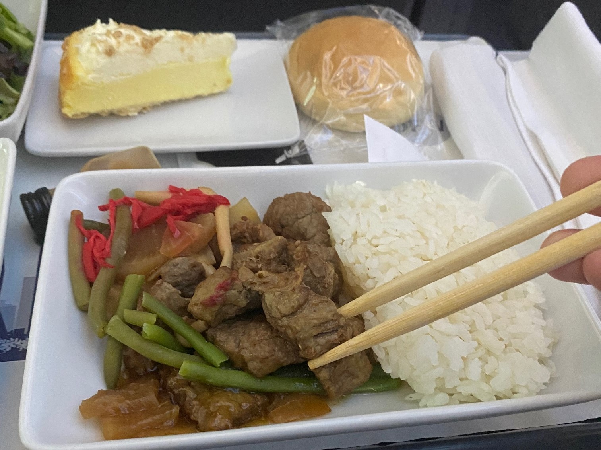
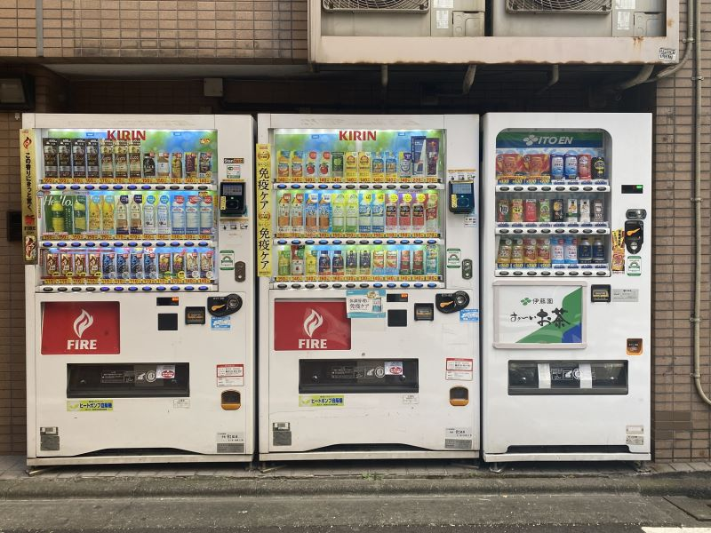
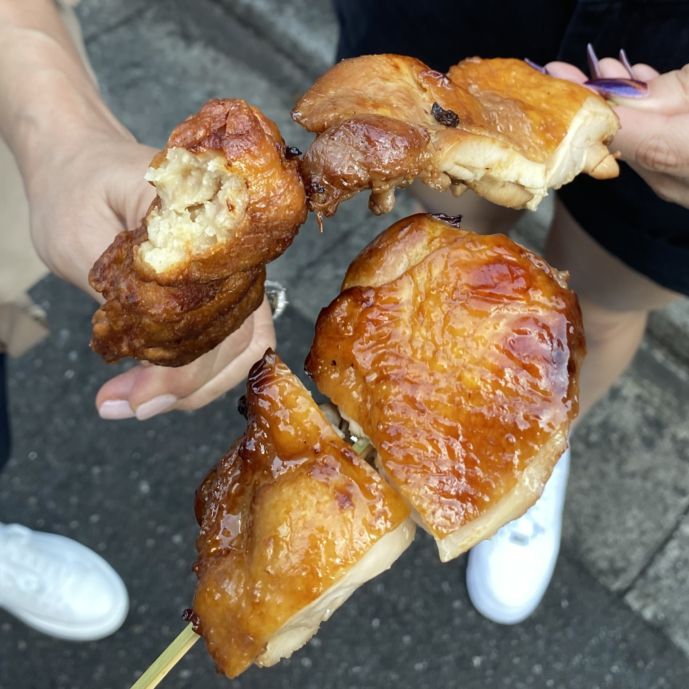
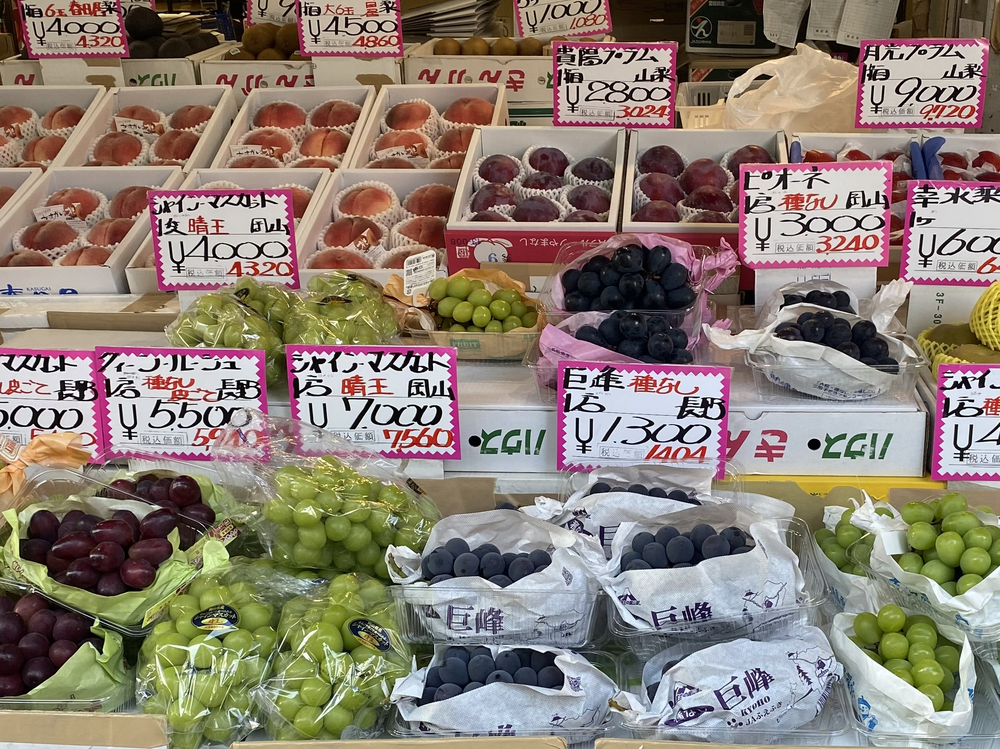
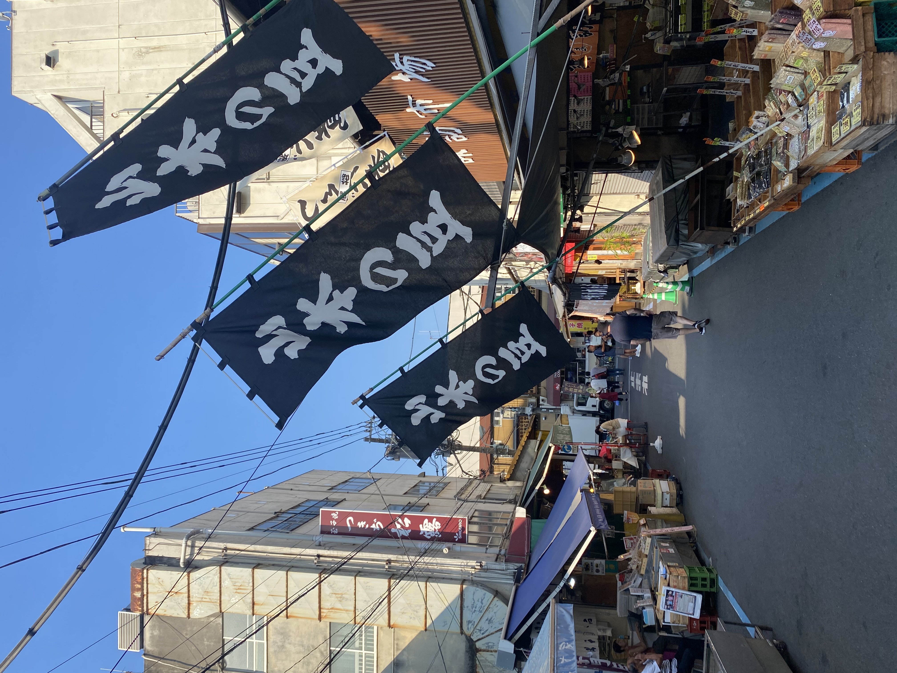
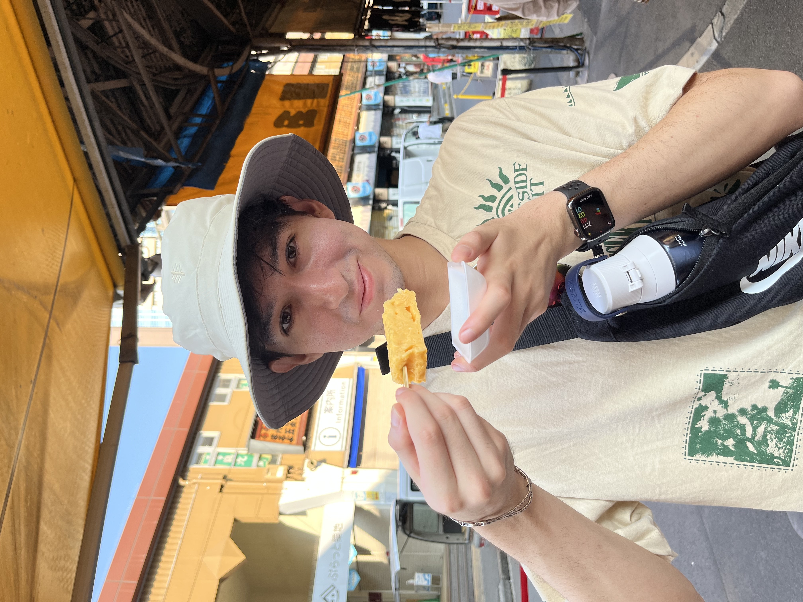

Tokyo
This trip took place on July 28th, 2023. It was the first vacation my family and I had in a while; so I had not a clue on what to expect. The time difference, navigation, and foreign language was all new to me. But the 7 to 8 days that I experienced there was something not many people could say they've done so I took in every moment I was there; and with that being said, I also came in knowing how I want others to get a glimps of my (what felt like) short visit.
The flight itself was cool - nothing unusual besides how long it took. The flight was about 10 hours and went by quicker than I thought. I had my computer to play games/do some work, got fed, slept through a movie, and talked to my sister to pass the time.
Day One
Once we landed, it didn't really hit me that we were in Japan yet. It wasn't till later when I saw ads in foreign language; one in particular of a Pokemon World Champion and saw the artwork on an ad. Even then it didn't hit me though. It did hit me when we went to a subway station to go to our hotel.
This picture captures the moment when it all settled in. I am a foreigner in this beautiful country. I always wanted to go to Tokyo, Japan ever since I was a kid, so it was fascinating to see that I was finally in this country that I only heard and seen so little about.
Fortunately, through my dads line of work, he travels a lot and was able to book a nice hotel using his points, so we stayed at the aloft hotel. I didn't get a picture of the room partly because of its regular ol' hotel look, but it did have a nice view of the sunrise with a main street off to the side.
When we got to the hotel, we got ready right away to go out and explore the city.
The first place we went was the Muji market. There, we got a warm savery croissant filled with red bean paste. It was really cool to see this market and to see how they display everything... even just their groceries. It was also cool to see all of their options they had in the store like their clothes and other small trinkets. I even got a small notepad that was the size of my wallet so I was able to fit it in my pocket and whip it out to jot something down whenever I wanted. Getting the notepad also gave me the opportunity to try and use their self check-out machine which was pretty complicated considering the fact that I don't know how to read Japanese. In the end, I was able to get some help and insert the few coins of yen into the machine and successfully walk away with my first purchase.
These are some pictures of the store:
After shopping around, we went down to the main floor and saw this small booth open where we got to try this float with melon soda and vanilla ice cream on top!
The ice cream itself was noticeably different from American vanilla ice cream. It had more of that dairy, milky and natural taste to it; and the soda is nothing like what we have in the U.S. It tasted like this hispanic soda called Inca Cola but had a sweet, good aftertaste of that green melon flavor.
One thing that I learned right before this trip, was that it is considered rude to walk and eat; so in many places, they'll have a designated area for people to bring their food and sit or stand while you eat.
The video is another thing that I would think about randomly. My family just arrived from America for the first time and this man is living his everyday life (maybe he just got off of work) and decided to get some icecream. This man could be a regular for all we know.
After that, we were back outside walking around; taking in the scenery of it all. It really is completely foreign to see people driving on the opposite side of the street, not to mention that you walk on the left side of the sidewalk too.
It's also Interesting how I didn't notice any cracks in the roads or sidewalk, which is pretty common in the U.S. I wonder what the reason(s) are even with the fact that there is always construction going on throughout the city. Does it have to do with the fact that no one litters like we do in the U.S? Or that we just don't make our street cement like they do?
After walking around for some time, it was time to have a meal that I will never forget. Close to our hotel, there was a street that primarily had an array of ramen shops. We took our time to scope out what was looking tasty and then got in line.
Something that I've seen throughout all the places we've been to in Japan, is that the places are rather small. They have good, fairly large sized buildings, but you would have a bunh of different businesses crammed inside. Something else I noticed while scoping out where to eat was that there were regular familys that would wait in line with their kids to eat, and then when seats were available, only part of the family would get to go inside and start eating their food while the other half would have to still wait for more people to leave and free up seats.
Luckily, for us, we went to a place that had a table to fit all four of us so that we could eat together. But we did have to wait in line for people to leave. What made this meal so memorable had to do with the fact that I love ramen. Especially spicy ramen. So, when I saw that they offered ramen in a spicy broth with egg and pork, I knew that's what I wanted. That bowl of ramen was an experience on its own. Even having ramen again in other parts of Japan, there was something about this place that had this creamy broth and the perfect spice level that made the dish so memorable. By the end of our dinner we were all tired and ready to have a food coma.
Day Two
The second day is probably my favorite day spent in Tokyo - or even throughout the whole trip in Japan. There was a lot planned so we were up early and out the door by 6:30AM. One thing we learned is something no one even heard on social media while researching what tips to know while in Japan, is that everything opens late. I think Starbucks opened around 10 or 11AM and other places wouldn't be open till around that time too. For an early snack, we went to a convenience store where I got a croissant and some coffee.
I guess it is fortunate to have these public vending machines so that you can ge some tea, coffee, redbull, or something else, any time of day.
Our first stop of the day was the Tsujiki Market. It was a place full of different things to buy ranging from foods to little trinkets. The first thing that my sister, mom and I got was this meat on a stick. I got chicken, my mom got a different type of chicken, and my sister got these meatballs. I think the chicken was good but I think we all agreed that my sisters meatballs had to be the best out of the three.
We also got these grapes that were huge and try later in the day.
  The last think that we tried was Tamagoyaki Tsukiji Shoro; a place that puts egg on a stick too. We got one stick for all of us to share but it was decently good! After looking up a recipe, What they use is danish, mirin, soy sauce, sugar, and salt, then blend it all with eggs. When tasting it, it did taste pretty sweet like it had maple syrup in it.
Our next stop was just a walk to a place to rest, and a place to go to that was closer to our next destination. We all know this resting stop dearly. The place we went to, was Starbucks.
I don't know what building the Starbucks was in but while we were sitting down, people would be walking by with business suits on and holding briefcases. If you listen closely to the video, the guard there would greet everyone that would walk in. And I mean back to back greetings. It seemed like a pretty easy job :)
The Starbucks itself was not what I thought a Starbucks in Japan would look like. I had no expectations but it either way, it exceeded my expectations. Like did you know you can get a freaking waffle at Starbucks?! not only that but basically all of their selections to choose from were different. before this trip, I was never a fan of matcha. It just wasn't my go to drink; but now, because of this trip, I have gained more of a liking towards matcha that now, I get it nearly every time I go to Starbucks.
And now, We were ready to embark on the main event of the day; TeamLab, a memory I will truly never forget. ...